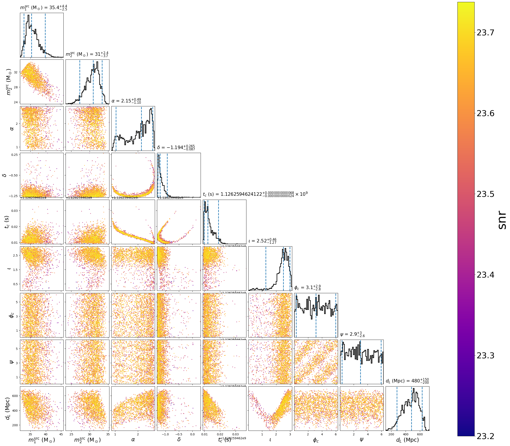

Example with GW150914
The marginalized time model can handle a broad array of waveform models which
it generates at full resolution like the gaussian_noise model. However,
it is optimized to enable marginalization of time in addition to marginalization
over sky location, polarization, and overall phase (valid if the waveform
approximant is dominant mode only).
This example demonstrates using the marginalized_time model with the
dynesty sampler in a configuration designed to run in couple minutes on a
laptop. Actual sampling will only occur over the component masses and
inclination. The remaining parameters are marginalized over, but will
be reconstructed after running the parameter estimation by a follow-up
script.
First, we create the following configuration file:
[model]
name = marginalized_time
low-frequency-cutoff = 30.0
# This is the sample rate used for the model and marginalization
sample_rate = 4096
marginalize_vector_params = tc, ra, dec, polarization
marginalize_vector_samples = 2000
; You shouldn't use phase marginalization if the approximant has
; higher-order modes
marginalize_phase = True
marginalize_distance = True
marginalize_distance_param = distance
marginalize_distance_interpolator = True
marginalize_distance_snr_range = 5, 50
marginalize_distance_density = 100, 100
marginalize_distance_samples = 1000
[data]
instruments = H1 L1
trigger-time = 1126259462.43
; See the documentation at
; http://pycbc.org/pycbc/latest/html/inference.html#simulated-bbh-example
; for details on the following settings:
analysis-start-time = -6
analysis-end-time = 2
psd-estimation = median-mean
psd-start-time = -256
psd-end-time = 256
psd-inverse-length = 8
psd-segment-length = 8
psd-segment-stride = 4
; The frame files must be downloaded from GWOSC before running. Here, we
; assume that the files have been downloaded to the same directory. Adjust
; the file path as necessary if not.
frame-files = H1:H-H1_GWOSC_4KHZ_R1-1126257415-4096.gwf L1:L-L1_GWOSC_4KHZ_R1-1126257415-4096.gwf
channel-name = H1:GWOSC-4KHZ_R1_STRAIN L1:GWOSC-4KHZ_R1_STRAIN
sample-rate = 2048
; We'll use a high-pass filter so as not to get numerical errors from the large
; amplitude low frequency noise. Here we use 15 Hz, which is safely below the
; low frequency cutoff of our likelihood integral (20 Hz)
strain-high-pass = 15
; The pad-data argument is for the high-pass filter: 8s are added to the
; beginning/end of the analysis/psd times when the data is loaded. After the
; high pass filter is applied, the additional time is discarded. This pad is
; *in addition to* the time added to the analysis start/end time for the PSD
; inverse length. Since it is discarded before the data is transformed for the
; likelihood integral, it has little affect on the run time.
pad-data = 8
[sampler]
name = dynesty
dlogz = 1.0
nlive = 500
[variable_params]
; waveform parameters that will vary in MCMC
mass1 =
mass2 =
inclination =
distance =
polarization =
ra =
dec =
tc =
[static_params]
; waveform parameters that will not change in MCMC
approximant = IMRPhenomD
f_lower = 20
[prior-mass1]
name = uniform
min-mass1 = 15
max-mass1 = 50
[prior-mass2]
name = uniform
min-mass2 = 15
max-mass2 = 50
[prior-ra]
name = uniform_angle
[prior-dec]
name = cos_angle
[prior-tc]
#; coalescence time prior
name = uniform
min-tc = 1126259462.35
max-tc = 1126259462.45
[prior-distance]
#; following gives a uniform in volume
name = uniform_radius
min-distance = 100
max-distance = 1000
[prior-polarization]
name = uniform_angle
[prior-inclination]
name = sin_angle
Download
For this example, we’ll need to download gravitational-wave data for GW150914:
set -e
for ifo in H-H1 L-L1
do
file=${ifo}_GWOSC_4KHZ_R1-1126257415-4096.gwf
test -f ${file} && continue
curl -O -L --show-error --silent \
https://www.gwosc.org/eventapi/html/GWTC-1-confident/GW150914/v3/${file}
done
By setting the model name to marginalized_time we are using
MarginalizedTime.
Now run the following script. Note that after the parameter inference is run, we reconstruct
the marginalized parameters by using the pycbc_inference_model_stats script with the options
as follows.
OMP_NUM_THREADS=1 pycbc_inference \
--config-file `dirname "$0"`/margtime.ini \
--nprocesses 1 \
--processing-scheme mkl \
--output-file marg_150914.hdf \
--seed 0 \
--force \
--verbose
# This reconstructs any marginalized parameters
OMP_NUM_THREADS=1 pycbc_inference_model_stats \
--input-file marg_150914.hdf \
--output-file demarg_150914.hdf \
--nprocesses 1 \
--reconstruct-parameters \
--force \
--verbose
pycbc_inference_plot_posterior \
--input-file demarg_150914.hdf \
--output-file demarg_150914.png \
--parameters \
"primary_mass(mass1, mass2) / (1 + redshift(distance)):srcmass1" \
"secondary_mass(mass1, mass2) / (1 + redshift(distance)):srcmass2" \
ra dec tc inclination coa_phase polarization distance \
--vmin 23.2 \
--z-arg snr
Download
This will run the dynesty sampler. When it is done, you will have a file called
demarg_150914.hdf which contains the results. It should take just a few minutes to run.
This will create the following plot:

The scatter points show position of different posterior samples.
{kind=link}